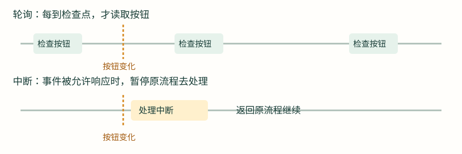
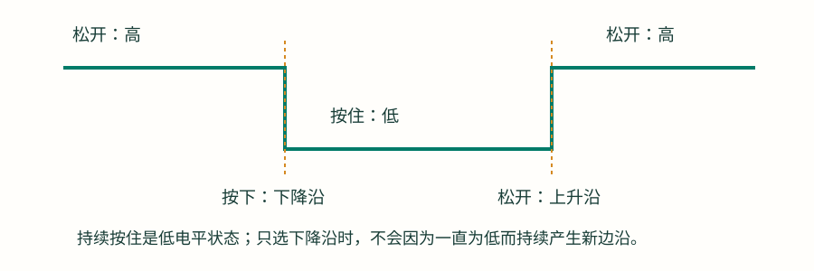
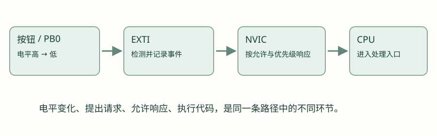
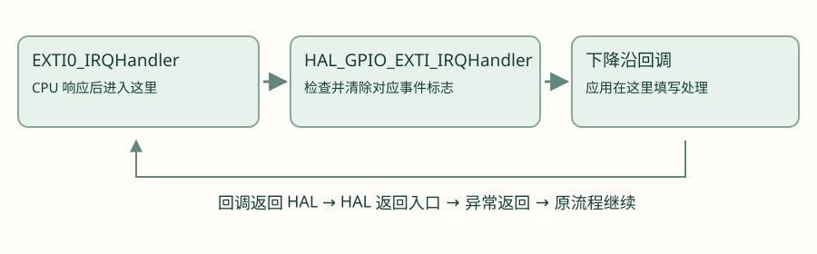
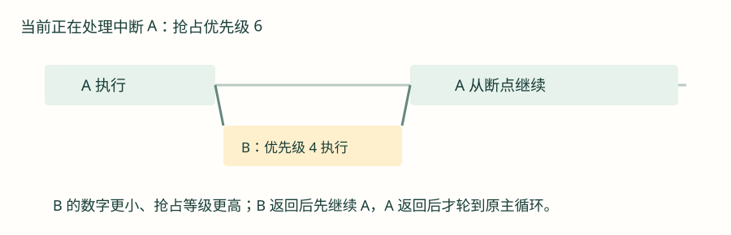
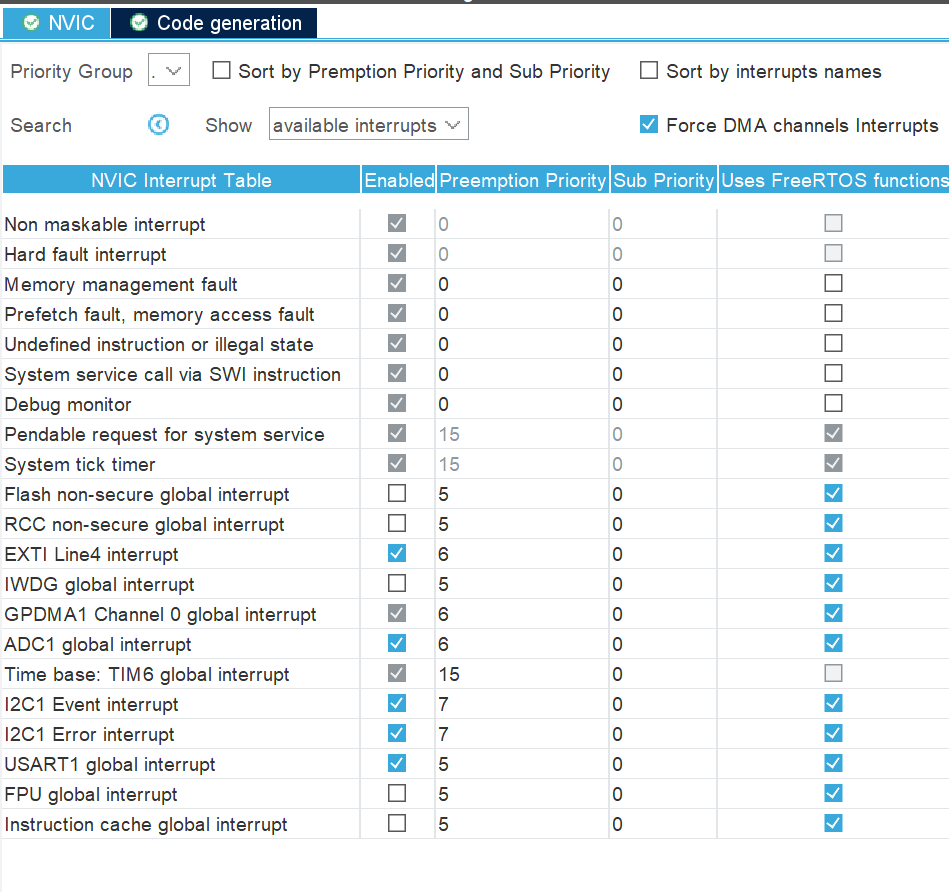
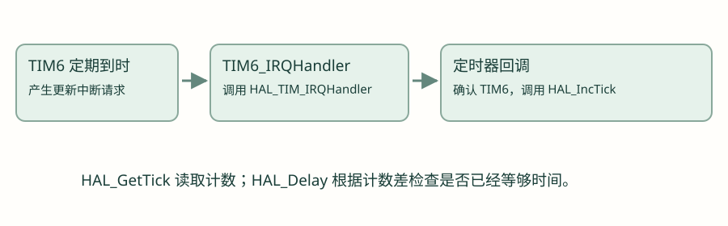
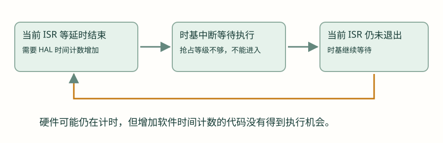
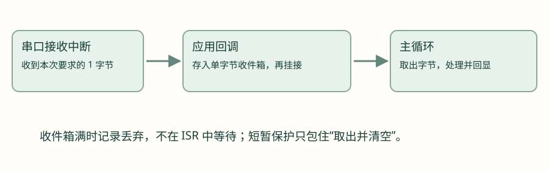
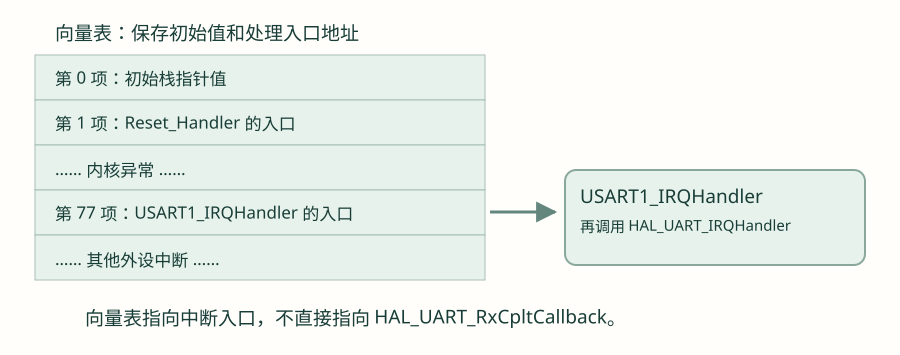

中断：从一次按钮事件到优先级与向量表
先理解暂停、处理与返回，再学会 GPIO 和 UART 中断；重点推演优先级与 HAL_Delay 的等待，最后阅读中断向量表。
第 1 节 · 不一直盯着按钮，也能知道它发生了变化吗？
上一章的轮询串口接收，会在函数里等待字节到达或超时。GPIO 的按钮程序也要一轮轮主动读取。如果主循环正忙着执行别的工作，怎样让一个需要及时处理的事件获得注意？这一章从这个问题开始。
1.1 轮询与中断分别在做什么
轮询是程序主动去检查。比如主循环每次执行到读取按钮的位置，才了解当前电平。中断则是先配置好要关注的事件，事件发生后由硬件提出请求；在允许响应的条件下，CPU 暂时转去执行对应的处理。

这里说“暂时”，是因为处理中断结束后，CPU 通常会恢复原来的执行流程，继续被打断的工作。它不会每发生一次按钮事件就重新从 main 开头运行。中断也不会把一个 CPU 变成两个：在本章单核实验中，同一时刻仍只有一条执行路径在运行。
1.2 先区分事件、请求与执行
| 阶段 | 用按钮举例 |
|---|---|
| 事件发生 | 按钮使引脚从高变低 |
| 提出请求 | 硬件记录指定变化，并请求 CPU 处理 |
| CPU 响应 | 事件获准响应，CPU 进入处理入口 |
| 处理结束 | 完成短小处理，恢复之前的流程 |
事件已经发生，不代表处理函数已经执行。请求可能还在等待：例如相应中断没有获准响应，或者 CPU 正在处理更紧急的中断。本章会逐步解释这些条件。
第 2 节 · 从按钮的高低变化认识上升沿与下降沿
沿用 GPIO 章的输入上拉接法：按钮松开时引脚为高，按下后接地为低。暂时只看理想按钮，先不考虑接点抖动。

| 名称 | 电平怎样变化 | 这条按钮接线中的动作 |
|---|---|---|
| 下降沿 | 高 → 低 | 按下 |
| 上升沿 | 低 → 高 | 松开 |
| 持续低电平 | 保持低，不是一次新变化 | 按住不放 |
如果配置为只检测下降沿，理想情况下按下触发一次，持续按住不会因为每过一毫秒又为低而产生一个新下降沿。若配置为上升沿，则应在松开时触发。先按接线判断，再选择触发方式，不能把所有按钮都默认为同一种边沿。
2.1 主循环不读按钮了，谁来发现这个下降沿？
以前使用 HAL_GPIO_ReadPin，是程序执行到这一句时，才读取一次引脚电平。如果主循环正在做其他工作，还没执行到读取按钮的语句，这一次读取就还没有发生。
现在希望主循环继续做事，按钮出现下降沿时又能提出中断请求，就需要芯片里有一部分硬件负责关注这个变化。我们预先告诉它：关注哪个引脚，以及关注高变低、低变高，还是两种变化都关注。设置完成后，检测变化这件事由硬件完成，不需要主循环反复调用读取函数。
STM32 中，承担这段工作的硬件叫外部中断/事件控制器，简称 EXTI。先把名字与刚才的需求对应起来：在这个按钮实验里，EXTI 负责检测选定引脚的边沿，记录事件，并按配置提出中断请求。这里的“外部”先用芯片外面接进来的按钮理解；EXTI 还可以连接其他事件来源，以后需要时再展开。
2.2 发现变化以后，CPU 就一定马上处理吗？
EXTI 发现下降沿后，还要把请求交给 CPU 的中断管理部分。CPU 可能正在处理别的中断，这条请求也可能尚未获准响应，因此“发现事件”和“开始处理”之间还隔着一步安排。
负责这一步管理的硬件叫嵌套向量中断控制器，简称 NVIC。本节先认识它的两项职责：允许哪些中断响应，以及多个中断出现时怎样安排优先级。“嵌套”和“向量”的含义后面再讲，此处先不用背全名。
把本例串起来：按钮使引脚由高变低 → EXTI 检测并记录这次变化、提出请求 → NVIC 按使能和优先级等条件安排响应 → CPU 转去执行中断处理。前半段解决“发现了什么”，后半段解决“什么时候能处理”。

GPIO 的输入上拉决定电路默认电平；边沿触发决定关注哪种变化；NVIC 使能决定这条中断是否获准响应。它们解决的是不同问题，不能只设置其中一个就认为整条路径已经完成。
同样编号的 PA0、PB0、PC0 要注意什么？
在本项目芯片的 GPIO 外部中断配置中，它们都涉及 0 号 EXTI 线，要选择这条线来自哪个端口，不能把它们当成三条互不相关的 EXTI0。本章独立实验只选择 PB0，具体限制以目标芯片的引脚和 EXTI 映射为准。
第 3 节 · 第一个独立实验：按下按钮，翻转一次灯
本章独立实验继续使用 PB0 按钮和 PA5 高有效 LED。实验板和基础 HAL 工程已经能正常启动，GPIO 输入输出也已经理解。现在把 PB0 从普通轮询输入改为下降沿外部中断；这是实验板的设置，不改动手表工程的按钮和传感器配置。
3.1 先在配置中对上三件事
- 在 Pinout & Configuration 中找到 PB0，选择它的 GPIO 外部中断功能，通常标为 GPIO_EXTI0。
- 在 System Core → GPIO 里选中 PB0，将模式设为下降沿触发的外部中断，查找含 Falling edge 的选项；上下拉仍为 Pull-up。
- 进入 NVIC 配置，允许 EXTI line 0 的中断响应。优先级先采用本节示例的抢占优先级 6、子优先级 0，后面专节解释这两个数。
- 核对 PA5 仍是推挽输出，初始化后先低电平。不要把 LED 配置成输入或外部中断。
| 要核对的对象 | 独立实验要求 | 用现象解释 |
|---|---|---|
| PB0 电路 | 按钮接地，输入上拉 | 松开高，按下低 |
| PB0 事件模式 | 下降沿外部中断 | 关注高变低 |
| NVIC | 允许 EXTI line 0 响应 | 事件能进一步进入 CPU 处理 |
| PA5 | 普通推挽输出 | 用已经学会的翻转函数观察处理是否发生 |
这里是按设置名称说明操作，不把其他功能的截图当作本实验实际界面。不同 CubeMX 版本布局可能不同；先核对所选引脚、下降沿模式和 NVIC 对应项。后面的应用代码基于这些配置已经进入可运行的独立工程。教程不执行代码生成或下载。
3.2 先认识要填写的回调函数
HAL 把外部中断的底层检查封装起来，并在检测到相应事件时调用应用可填写的函数，这种被库调用的应用函数叫回调函数。STM32U5 HAL1 的下降沿回调名是 HAL_GPIO_EXTI_Falling_Callback。
它没有返回值，参数是一个 uint16_t 引脚掩码，用来表示哪条引脚事件触发了回调。这里比较 GPIO_PIN_0，表示 0 号引脚；端口 PB0 的来源已经在 EXTI 配置中选定，不由这个参数再次携带。其他 STM32 系列的 HAL 回调名称可能不同，先按当前工程驱动检查。
第一步 · 在独立实验的应用 C 文件中实现；main 的主循环可以暂时为空
void HAL_GPIO_EXTI_Falling_Callback(uint16_t GPIO_Pin)
{
if (GPIO_Pin == GPIO_PIN_0) {
HAL_GPIO_TogglePin(GPIOA, GPIO_PIN_5);
}
}这个回调只执行一次很短的 GPIO 翻转。理想按钮按下一次，灯的状态就翻转一次；松开时不应因上升沿而触发这段下降沿回调。真实按钮可能因为抖动而触发多次，不能立即把多次翻转归因于配置错，后面会处理这个问题。
第 4 节 · CPU 到了哪里？入口、HAL 与 __weak 回调
4.1 中断入口和应用回调不是同一个函数
CPU 响应 EXTI0 时，先进入 EXTI0_IRQHandler，并不是直接进入刚才填写的回调。IRQ 可以理解成中断请求，Handler 表示处理入口。独立 STM32U5 实验的这个入口，应把事件交给 HAL_GPIO_EXTI_IRQHandler。
HAL_GPIO_EXTI_IRQHandler 接收要处理的引脚掩码；它没有返回值；检查硬件记录的是上升沿还是下降沿，清除对应的事件标志，再调用相应回调。主循环不需要主动调用它。
入口对照 · 通常位于中断处理 C 文件；若工程已有该入口，核对其中调用，不再重复定义
void EXTI0_IRQHandler(void)
{
HAL_GPIO_EXTI_IRQHandler(GPIO_PIN_0);
}
清除事件标志表示这一份硬件记录已经处理。如果入口没处理、标志没正确清理，CPU 可能刚退出又因同一待处理来源再次进入。先用 HAL 正常处理路径，不要一边交给 HAL，一边随意手动清除标志。
4.2 为什么自己写同名回调，HAL 就会调用到它？
HAL 驱动中已经提供了默认回调，其中一些默认实现用 __weak 标记为弱定义。可以先理解为库提供的“备用实现”：如果应用没有提供正常的同名实现，就使用它。
阅读示意 · 不把这个弱定义再复制进应用代码
/* 默认实现的简化示意，真实定义在 HAL 驱动中。 */
__weak void HAL_GPIO_EXTI_Falling_Callback(uint16_t GPIO_Pin)
{
(void)GPIO_Pin;
}应用中填写第 3 节那个同名、同参数和返回类型、不加 __weak 的函数，并使它参与编译链接，链接器就能选择应用实现。这个过程发生在构建时，不是运行中让 CPU 搜索一个名字相似的函数。应用实现也不要声明为 static，否则它不是给库调用的同名全局实现。
实际回调仍然需要 HAL 执行到那次调用才会运行。只有自己写了函数，却没启动对应事件、没使能中断或入口没转交给 HAL，它仍然不会被调用。当前仓库 UART 的动态回调注册开关为 0，本章按这种弱回调替代方式讲；注册回调的其他配置以后按所用 HAL 版本查阅。
4.3 回调仍然在中断里
入口调用 HAL，HAL 接着调用回调，这整段还属于同一次中断处理。把很慢的工作搬进回调，没有让它自动跑到主循环里。因此，判断一段代码是否在中断里，应该追踪调用路径，不能只看函数名字。
第 5 节 · 中断里记录事件，主循环处理工作
翻转一个 GPIO 是很短的动作，可以用于观察。但在中断里等待按钮松开、画整页屏幕或发送长文本，会让这条处理路径占用很久。本节把应用动作搬回主循环，中断只留下事件记录。
5.1 先认识 volatile，不把它当成锁
中断可能在主循环运行期间改变共享变量。volatile 告诉编译器按规定实际访问这个对象，避免把需要观察的值仅当成不变的普通局部结果。它不会自动让一串操作不可打断，也不会自动为变量加锁。
uint32_t 是无符号 32 位整数类型；本例的文件作用域变量用 static 限定在当前 C 文件内，生命周期贯穿程序运行。先采用一个容易分析的约定：回调负责增加一个计数，主循环只读取这个计数，不把它清零。这里统计的是回调执行次数，仍然不等于已经消抖的按钮按下次数。
替换之前直接翻转 LED 的回调；不要同时保留两个下降沿回调实现
/* 放在同一个应用 C 文件的文件作用域。 */
static volatile uint32_t button_irq_count = 0;
void HAL_GPIO_EXTI_Falling_Callback(uint16_t GPIO_Pin)
{
if (GPIO_Pin == GPIO_PIN_0) {
button_irq_count++;
}
}uint32_t 是无符号 32 位整数；这里的 static 使变量保留在当前 C 文件中，生命周期贯穿程序运行。回调每执行一次就加一。只有这个回调写它，主循环不修改它。主循环另外保存自己已经处理到的计数：
与上面的回调配套 · 放在独立实验 main 的初始化之后
uint32_t handled_count = 0;
while (1) {
uint32_t snapshot = button_irq_count;
while (handled_count != snapshot) {
handled_count++;
HAL_GPIO_TogglePin(GPIOA, GPIO_PIN_5);
}
/* 继续处理主循环的其他工作。 */
}snapshot 是本轮拍下的计数快照。处理中又来一次回调时，新计数留到下一轮读取，不需要主循环清零共享计数。该例按本项目 Cortex-M、正常对齐的 32 位对象和单个写入者条件分析；不能据此断言任意平台、多个写入者的 count++ 都是安全原子操作。主循环也不能落后整整一个 32 位计数周期。
更重要的是：如果硬件事件在中断响应前已经合并成一个待处理标志，这个软件计数无法还原那些没有分别进入回调的变化。需要精确计数外部高速脉冲时，要使用适合的硬件功能，不能把这个按钮实验当作完整计数器。
5.2 中断不会自动消除按钮抖动
GPIO 章中看到的接点抖动仍然存在。一次按动产生多个下降沿，就可能调用多次回调。现在不要在回调里加入 HAL_Delay(20) 来等待抖动过去；第 7 节会解释为什么这甚至可能无法结束。消抖可以在主循环中根据时间和再次读取的电平处理，后续裸机综合会把稳定时间窗口完整组织起来。
5.3 如果需要“取出后清空”，怎样避免丢事件？
假设中断把 ready 设为 1，主循环先看见 1；中断又写入了新数据，然后主循环把 ready 清成 0，新事件就可能被覆盖。UART 的单字节收件箱会遇到同类问题。可以把很短的“读取并清空”保护起来，暂时不允许普通可配置中断插入。这样的短小保护区叫临界区。
| 本章稍后要用的 CMSIS 接口 | 用途 |
|---|---|
| __get_PRIMASK() | 读取当前对可配置中断的屏蔽状态，先保存下来 |
| __disable_irq() | 暂时屏蔽可配置中断；不是关闭所有硬件功能 |
| __set_PRIMASK(saved) | 恢复进入保护区之前保存的屏蔽状态 |
CMSIS 是 Arm 提供的内核访问接口。这里先认识上述三个操作：保存原状态、短暂屏蔽、恢复原状态。NMI、HardFault 等特殊异常不是这段保护区能够全部关掉的对象；它也不能当作多核锁。
第 6 节 · 优先级：两个中断来了，谁先执行？
假设 CPU 正在处理按钮事件，此时串口又收到数据。是先处理完按钮再处理串口，还是先暂停按钮处理？NVIC 的优先级设置参与决定这个顺序。先只讨论普通可配置外设中断，复位和特殊异常有自己的规则。
6.1 数字越小，抢占优先级越高
在本章 Cortex-M 的 NVIC 设置中，数字小表示更紧急。例如抢占优先级 4 比 6 高。若 B 的抢占等级高于正在执行的 A，且没有屏蔽等限制，B 就能暂停 A 先执行；这个动作叫抢占。

| 当前 A 的抢占优先级 | 新请求 B 的抢占优先级 | 本例会怎样 |
|---|---|---|
| 6 | 4 | B 可以抢占 A；B 返回后继续 A |
| 6 | 6 | B 不能抢占 A，等待 A 退出 |
| 6 | 8 | B 也不能抢占 A，等待后续响应机会 |
B 先来了，随后 A 才来，执行顺序还要结合当时谁已经在运行。说“高优先级先执行”，不能省略“哪些中断正在执行、哪些只是待处理”这些条件。
6.2 先分清三种状态
| 状态 | 意思 | 不能误解成 |
|---|---|---|
| Enabled：允许响应 | 这条中断已经获准由 NVIC 响应 | 已经发生了事件 |
| Pending：待处理 | 请求已经挂起，等待 CPU 响应 | 回调已经执行 |
| Active：正在处理 | CPU 已经进入这次中断处理 | CPU 不能再被更高抢占等级中断打断 |
外设自己的事件标志与 NVIC 的待处理状态并不是同一个寄存器。排错时要沿整条链查看；单独清除 NVIC 待处理状态，不一定消除了仍在提出请求的外设来源。
6.3 抢占优先级与子优先级有什么区别？
抢占优先级决定一个可配置中断能否打断另一个正在执行的可配置中断。子优先级用于抢占等级相同、多个请求都在等待时的响应先后选择；它不能让同一抢占等级的 B 打断已经运行的 A。
这个芯片实现了 4 个优先级位。优先级分组决定其中几位用于抢占、几位用于子优先级。STM32 HAL 中的 Group 4 是 4 位抢占、0 位子优先级，并不是“当前优先级为 4”。
| 本芯片上的分组 | 抢占等级取值 | 子优先级取值 |
|---|---|---|
| NVIC_PRIORITYGROUP_4 | 0～15 | 只有 0，没有单独的子优先级位 |
| NVIC_PRIORITYGROUP_3 | 0～7 | 0～1 |
| NVIC_PRIORITYGROUP_2 | 0～3 | 0～3 |
本章主线固定 Group 4。先把抢占关系弄清楚，示意实验再用 Group 3 对照子优先级。项目启动时 HAL_Init 设置 Group 4；进入后续操作系统课程后，还要遵守内核对分组和可调用接口的限制，不能为了一个实验随意改整个项目的分组。
6.4 在 CubeMX 中，怎样读这张优先级表？
打开 System Core → NVIC，可以看到中断配置表。先不要逐行记住所有名字；从刚学过的“允许响应、抢占等级、同等级排队”三个问题出发，读懂对应列即可。

| 界面名称 | 它在问什么 | 怎样读本图 |
|---|---|---|
| NVIC Interrupt Table | 这是哪一种中断来源？ | 例如 EXTI Line4 是 4 号外部中断线，USART1 是串口 1，Time base: TIM6 是本工程的 HAL 时基。 |
| Enabled | 是否允许这条中断响应？ | 有勾与无勾表示不同使能状态。勾选不表示事件已经发生，也不表示应用回调已经运行。 |
| Preemption Priority | 它能否打断另一条正在处理的中断？ | 这是抢占优先级；对本节比较的普通外设中断，数值越小，等级越高。 |
| Sub Priority | 相同抢占等级的多个待处理请求，怎样选择先后？ | 这是子优先级。本图这些项都是 0；本工程 Group 4 没有单独的子优先级位。 |
表上方的 Priority Group 用来选择优先级位怎样分配，正对应上一小节的“分组”。这张图的下拉框没有清楚显示完整取值，不能只凭截图判断；本工程的 Group 4 可在启动时的 HAL 初始化代码中核对。旁边的 Sort 选项只改变表格显示顺序，不会让某条中断获得更高优先级。
先用三行数字，推演正在发生的事
- EXTI Line4＝6：假设 CPU 已经进入这条外部中断处理。这里的 Line4 对应项目的 PB4 传感器事件，不是前面独立实验的 PB0 按钮。
- USART1＝5：此时如果串口提出请求，5 比 6 小；在已经使能、未被屏蔽等条件满足时，USART1 可以抢占 EXTI4。串口处理返回后，再继续原来的 EXTI4 处理。
- Time base: TIM6＝15：如果正在执行 USART1，TIM6 的 15 比 5 大，不能抢占它。下一节就用这个关系解释：在 USART1 回调里等待 HAL 时间增加，为什么可能一直等下去。
6.5 把界面数字对应到 HAL 接口
HAL_NVIC_SetPriority 的三个参数分别是中断编号名、抢占优先级、子优先级。HAL_NVIC_EnableIRQ 接收一个中断编号名，允许它响应。EXTI0_IRQn 是 EXTI0 的编号常量，不是 GPIO 引脚掩码。这两个设置函数都没有返回值；它们的执行效果要通过配置和后续事件响应检查。
配置对照 · 这些通常已在基础工程初始化中完成，不要在主循环里反复设置
HAL_NVIC_SetPriority(EXTI0_IRQn, 6, 0);
HAL_NVIC_EnableIRQ(EXTI0_IRQn);两句调用没有选择 PB0 的下降沿，也没有指定按钮上拉；它们只完成 NVIC 这一段。GPIO/EXTI 的配置仍然需要前面第 3 节的设置。
分组与抢占规则可以继续对照 Arm CMSIS 的 NVIC 说明。其中 IRQn 表示中断编号，不是优先级值。
第 7 节 · 重点：HAL_Delay 为什么可能卡在中断里？
7.1 HAL_Delay 不是一只独立的闹钟
GPIO 章把 HAL_Delay(20) 当作“等待约 20 ms”使用。现在进一步看它怎样知道时间到了：HAL 维护一个软件时间计数，由时基中断定期增加；延时函数读取开始计数，再反复检查计数差是否足够大。
HAL_GetTick() 没有参数，返回当前 HAL 时间计数；默认毫秒时基下，可以用它观察经过的毫秒。HAL_IncTick() 没有参数和返回值，用来增加这个计数，通常由时基中断路径调用。两者都是普通函数，不是时间本身。
概念伪代码 · 省略了 HAL 的最小等待补偿等实现细节
/* 理解流程的伪代码，不替换 HAL 驱动。 */
开始 = 读取时间计数();
while (读取时间计数() - 开始 < 需要等待的时间) {
/* 继续等。计数必须由其他执行路径推进。 */
}如果中断无法更新时间计数，CPU 再快地重复检查，看到的仍然是同一个值，延时就可能无法结束。HAL 默认实现会加入一个时基单位的补偿来保证最小等待，因此也不能把参数机械等同于精确执行时长。
7.2 谁在增加时间？默认工程与手表工程要分开看
HAL 的默认弱实现通常用 SysTick 产生周期中断，增加时间计数；工程也可以替换时基实现。当前手表工程使用 TIM6，不是简单套用“SysTick 在计时”的说法。

可以从 stm32u5xx_hal_timebase_tim.c 找到 TIM6 时基初始化，再到 main.c 的定时器回调 核对 TIM6 时调用 HAL_IncTick。定时器内部如何产生周期，到 TIM 章节再展开。
7.3 逐步推演一次互相等待
- USART1 中断正在执行，它的回调也在这条中断路径里。
- 回调调用 HAL_Delay(20)，等待软件时间计数增加。
- TIM6 到时间，提出时基中断请求。
- 如果 TIM6 的抢占等级不足，就不能打断 USART1，只能等待它退出。
- 时间计数没有增加，HAL_Delay 继续等待；USART1 也就一直不退出。

注意：硬件计时器可能仍在走，中断请求也可能已经出现；没有执行的是增加软件计数的处理代码。不断出现的请求也不等于硬件为每一毫秒排好一条独立软件任务。单个待处理标志可能合并多次到时，不能假设稍后会自动补回所有毫秒。
7.4 哪些优先级关系能推进时间？
| 时基相对当前 ISR 的抢占等级 | 能否抢占 | 中断内依赖该时基的延时 |
|---|---|---|
| 更高，例如时基 4、当前 5 | 在未被屏蔽等条件下可以 | 计数有机会增加，延时可能结束 |
| 相同，例如都为 5 | 不可以；子优先级不能改变这一点 | 可能一直等待 |
| 更低，例如时基 15、当前 5 | 不可以 | 可能一直等待 |
| 即使等级更高，但时基中断被屏蔽或停用 | 无法正常执行时基处理 | 仍可能一直等待 |
当前配置中，USART1 的抢占优先级为 5，HAL 时基优先级由 TICK_INT_PRIORITY 设为 15，初始化时赋给 TIM6。在这些设置下，如果从 USART1 ISR 内调用依赖 TIM6 计数的 HAL_Delay，TIM6 不能抢占 USART1，就存在上述等待问题。这里是在解释错误调用会怎样，不表示当前项目回调本身已经这样调用。
7.5 子优先级更高也救不了同级抢占
在一个有子优先级位的分组中，假设当前 ISR 的抢占优先级 5、子优先级 1；时基抢占优先级也为 5、子优先级 0。时基在同等级待处理请求之间可能更先获选，但当前 ISR 已经运行时，它仍不能靠子优先级来抢占。要分清“排队时谁先”和“正在执行时能不能打断”。
7.6 不把提高时基优先级当作通用解法
把时基设得更高，可能使上述延时有机会结束；但当前外设 ISR 仍然被一段长等待占着，其他不能抢占它的工作还会被推迟。教学和实际组织程序时，优先采用中断里记录事件，主循环处理需要等待的工作。
- 不要在按钮回调里等松手或靠长延时消抖。
- 不要在短暂屏蔽中断的临界区内调用 HAL_Delay。
- 不要在负责更新时间的 TIM6 回调里等待同一个 HAL 时基继续增加：这会变成等待自己的下一次处理。
- 一些 HAL 阻塞函数的超时判断也读 HAL 时间计数；时间不推进时，传了超时参数不代表一定能按时返回。
第 8 节 · UART 中断接收：启动之后，主循环继续运行
有了按钮回调和优先级的经验，再把 UART 章的轮询接收换成中断接收。第一轮仍使用 115200、8N1，一次接收一个字节，电脑手动低速发送，不马上增加连续大数据流。
8.1 HAL_UART_Receive_IT 与轮询版本有什么不同？
HAL_UART_Receive_IT 用来启动一笔中断方式的接收。IT 是 interrupt 的缩写。三个参数依次是串口对象地址、接收存储区地址、数量。本章固定 8N1，数量 1 就是一个字节。它返回 HAL_StatusTypeDef；HAL_OK 表示本次接收安排成功，不表示数据已经到达。
| 接口 | 调用时做什么 | 怎样知道要求的数据已接收完成 |
|---|---|---|
| HAL_UART_Receive | 在函数中轮询等待数据、超时等返回条件 | 检查函数返回状态 |
| HAL_UART_Receive_IT | 设置接收目标并允许对应接收中断路径工作，随后返回 | 接收完成后，由 HAL 调用回调 |
中断接收接口没有与轮询版相同的超时参数。应用若需要“这么久没收到就放弃”，要另行管理超时。接收存储区也必须一直有效；不能把一个马上返回的函数里的普通局部变量地址交给后台接收后就不管。
与上一章一样，先把声明按位置读一遍。这里没有第四个 Timeout 参数：
HAL_StatusTypeDef HAL_UART_Receive_IT(
UART_HandleTypeDef *huart,
uint8_t *pData,
uint16_t Size);UART_HandleTypeDef 是上一章认识的串口管理结构体类型，&huart1 选择现有的 USART1 对象；pData 指向可以写入的接收存储区，Size 指定数量。接收数据在存储区里，函数返回的状态另存到 status 类变量中，二者不要混淆。
接口第一步 · 这两处分别放在文件作用域与 main 中，不把所有行放进同一个位置
/* 文件作用域：在应用运行期间始终有效。 */
static uint8_t rx_byte;
/* main 中，串口初始化后启动一次。 */
HAL_StatusTypeDef start_status = HAL_UART_Receive_IT(&huart1, &rx_byte, 1);先在调试器中检查 start_status。失败时不能当作已经启动；成功后主循环可以继续执行其他工作，直到相应接收事件使中断路径运行。
8.2 入口必须接到 HAL，完成后才会到回调
USART1 的入口名是 USART1_IRQHandler；它调用 HAL_UART_IRQHandler(&huart1)。这个 HAL 函数接收串口管理对象的地址，没有返回值；它检查当前串口的中断来源并处理相应状态，完成本次要求的字节数后，才会调用 HAL_UART_RxCpltCallback。
入口对照 · 独立基础工程若已有这个函数，只检查转交调用，不重复定义
void USART1_IRQHandler(void)
{
HAL_UART_IRQHandler(&huart1);
}HAL_UART_RxCpltCallback 没有返回值，参数是发生完成事件的 UART 管理对象指针。回调里比较这个指针与 &huart1，确认是本例的串口；多个串口可以共用同一个回调入口，不能不加区分地处理所有事件。
8.3 先让主循环处理一个字节，不急着连续接收
回调里不能长时间等发送完成。那就先只做一件事：接收完一个字节后，把“收到了”记下来，主循环看到这个标志后再回显。这里暂时不在回调中重新接收，rx_byte 在主循环使用期间不会被下一笔接收覆盖。
第一步：只有接收存储与一个标志 · 替换 8.1 的 rx_byte 声明
static uint8_t rx_byte;
static volatile uint8_t rx_ready = 0;
void HAL_UART_RxCpltCallback(UART_HandleTypeDef *huart)
{
if (huart == &huart1) {
rx_ready = 1;
}
}在 main 的串口初始化后启动一次接收。完成后，主循环发送当前字节，清除标志，再安排下一次。start_status 和 tx_status 都是前面学过的 HAL 返回值；失败时在普通路径检查，不在中断里无限尝试。
第二步：先慢速手动发 A、B、C · 启动一次，处理完再启动下一次
HAL_StatusTypeDef start_status = HAL_UART_Receive_IT(&huart1, &rx_byte, 1);
while (1) {
if (rx_ready != 0) {
HAL_StatusTypeDef tx_status = HAL_UART_Transmit(
&huart1, &rx_byte, 1, 100);
rx_ready = 0;
start_status = HAL_UART_Receive_IT(&huart1, &rx_byte, 1);
/* 调试器检查 tx_status 与 start_status，失败后不假定仍在接收。 */
}
/* 继续其他普通工作。 */
}现在先手动发送一次 A，等回显后再发送 B。每次都能完成，是因为流程明确分成接收、处理、再接收。但如果电脑不等，连续发送 ABC 呢？主循环回显期间没有安排下一笔接收，可能漏掉后面的数据。这个版本适合看清分工，不适合连续字节流。
8.4 想及时安排下一次接收，就需要先存住这次的字节
为了减小上面的接收空档，可以在回调里先复制当前字节，再立即安排下一笔接收。rx_byte 会再次交给 HAL 使用，所以主循环不能再直接把它当成稳定的数据。由此才需要另一格暂存位置 inbox，以及表示里面有没有未处理字节的 inbox_ready。
先看一种故意不完整的写法：回调每收到一个字节都覆盖 inbox。如果 A 还没被主循环取走，B 就来了，A 会被覆盖。于是写入前先检查 inbox_ready，满时不覆盖，并用 dropped_bytes 记录这次丢弃。rearm_status 则记录下一次接收是否启动成功，这些变量分别对应已经遇到的问题。
下面是替换 8.3 的版本，不与前一个回调、变量或主循环同时保留。把刚才逐项增加的处理放在一起。它仍然只有一格，不能在 ISR 里等主循环来取。
| 变量 | 谁写、谁读 | 用途 |
|---|---|---|
| rx_byte | HAL 接收写入，完成回调读取 | 下一笔中断接收使用的存储区 |
| inbox / inbox_ready | 回调存入；主循环在短保护区中取出并清空 | 单槽字节和是否有待处理数据 |
| dropped_bytes | 回调增加，调试器或主循环观察 | 记录应用收件箱已满导致的丢弃 |
| rearm_status | 回调写，主循环或调试器观察 | 记录下一笔接收是否成功安排 |
完整正常接收回调 · 替换 8.1 的 rx_byte 声明，避免重复定义
/* 全部放在同一个应用 C 文件的文件作用域。 */
static uint8_t rx_byte;
static volatile uint8_t inbox;
static volatile uint8_t inbox_ready;
static volatile uint32_t dropped_bytes;
static volatile HAL_StatusTypeDef rearm_status = HAL_OK;
void HAL_UART_RxCpltCallback(UART_HandleTypeDef *huart)
{
if (huart != &huart1) {
return;
}
if (inbox_ready == 0) {
inbox = rx_byte;
inbox_ready = 1;
} else {
dropped_bytes++;
}
rearm_status = HAL_UART_Receive_IT(&huart1, &rx_byte, 1);
}一笔数量为 1 的接收完成后，就要安排下一笔；不能以为第一次调用 Receive_IT 以后就会永远自动循环接收。这里在回调保存当前字节后重新启动，并记录返回值。重新启动失败时，接收可能停止，需要在普通执行路径中检查原因并恢复，不能忽略状态。

主循环取 inbox 时还有一个问题：如果它刚复制完字节、还没清标志，中断就来了，会怎样？回调会看到旧的“满”状态，可能丢掉新字节。因此把“判断、复制、清标志”放在一小段不被普通中断打断的区域，使用第 5 节解释过的三个 CMSIS 接口。只保护这几步，恢复原屏蔽状态后再发送，不带着中断屏蔽状态等串口：
主循环配套 · 替换此前只启动一次的片段，不再额外重复启动接收
/* 放在 main 的串口初始化之后，启动正常接收路径。 */
HAL_StatusTypeDef start_status = HAL_UART_Receive_IT(&huart1, &rx_byte, 1);
/* 先确认 start_status == HAL_OK；否则在调试器定位启动错误。 */
while (1) {
uint8_t have_byte = 0;
uint8_t local_byte = 0;
uint32_t saved_mask = __get_PRIMASK();
__disable_irq();
if (inbox_ready != 0) {
local_byte = inbox;
inbox_ready = 0;
have_byte = 1;
}
__set_PRIMASK(saved_mask);
if (have_byte != 0) {
HAL_StatusTypeDef tx_status = HAL_UART_Transmit(
&huart1, &local_byte, 1, 100);
if (tx_status != HAL_OK) {
/* 在普通执行路径记录或观察回传失败。 */
}
}
/* 此处继续处理其他普通工作。 */
}先关闭电脑工具的本地回显和自动附加换行，手动发送 A，检查返回 41；再依次发送 B、C，确认每次接收后都继续挂接了下一笔。然后在主循环回显位置临时增加一段等待，观察连续输入时 dropped_bytes 是否增加，理解“使用中断”并不等于“无限缓冲”。
8.5 正常接收以外，还要处理什么？
这个学习示例只完整展示正常的低速收取、存放和回传路径。串口还可能发生帧格式、噪声、溢出等错误；应用可以通过 HAL_UART_ErrorCallback 记录错误事件，在普通执行路径查看对象状态、结束失败接收并按所用 HAL 接口重新安排。具体恢复流程需要结合错误类型和驱动版本，不能把只写一个正常回调当作已经覆盖错误恢复。
扩展阅读 · CPU 怎样通过中断向量表找到入口？
到这里，已经会从硬件事件追踪到入口和回调。还可以继续问：CPU 怎么知道“USART1 发生中断”后应该跳到 USART1_IRQHandler？答案与中断向量表有关。第一次学习可以先看完整路径，再按需要展开本节。
扩展 1 · 表里存的是什么？
向量表是一段按固定顺序组织的数据。第一项保存初始栈指针值，后面包含复位、内核异常和外设中断的处理入口地址，并夹有保留项。因此，不能说“向量表每一项都是中断函数地址”。

| 从 0 编号的表项 | 这个项目里的例子 | 含义 |
|---|---|---|
| 0 | _estack 对应的值 | 初始栈指针；不是函数入口 |
| 1 | Reset_Handler | 复位后启动代码入口 |
| 后续内核异常项 | HardFault_Handler、SysTick_Handler 等 | 对应内核异常的处理入口 |
| 16 + 外部 IRQn | USART1_IRQn=61 → 第 77 项 | 对应外设中断处理函数地址 |
这里的 IRQn 是芯片定义的外部中断编号，不是优先级。向量表项目靠前，也不等于你已经给它设置更高的抢占优先级。可配置的响应紧急程度由 NVIC 设置等规则决定。
扩展 2 · 在启动文件里只认几行就够了
本项目的 startup_stm32u575ritx.s 用汇编描述向量表。现在不要求掌握汇编；先认识 .word 在这里放一个 32 位值或符号对应的地址，省略注释表示中间还有其他表项。下面并非完整启动文件：
启动文件阅读节选 · 省略的表项必须保留，不能把节选当成可替换的向量表
g_pfnVectors:
.word _estack
.word Reset_Handler
/* ... 内核异常与其他表项 ... */
.word EXTI0_IRQHandler
/* ... 其他表项 ... */
.word TIM6_IRQHandler
/* ... 其他表项 ... */
.word USART1_IRQHandler这些项在真实文件中的位置由芯片定义；删掉中间项会改变后面的对应关系。CPU 响应 USART1 时先取到中断入口地址；入口再调用 HAL_UART_IRQHandler，HAL 处理到接收完成条件时才调用 HAL_UART_RxCpltCallback。回调不是直接写在该向量表项里的地址。
扩展 3 · 没有实现处理函数，为什么会进入默认死循环？
启动文件对许多入口提供弱别名，指向 Default_Handler。应用提供正确的同名全局入口时，会替代相应弱入口；若函数名拼错、没有参与链接，默认入口就可能仍然生效。项目里的 Default_Handler 用循环停住，便于发现没有正确处理的异常。
这与第 4 节的 HAL 弱回调是两层机制：启动文件的弱入口解决 CPU 首先进入哪里；HAL 的弱回调解决库处理后调用哪一份应用实现。不能只重写 HAL 回调，就认为启动文件入口的转交调用也自动补齐了。
向量表一定只能放在一个固定地址吗？
CPU 有用于定位向量表的机制，Cortex-M33 的相关配置还涉及安全状态。启动代码与链接布局决定本工程实际使用哪张表，不能只凭启动文件里的注释假设所有应用都从同一地址取向量。以后讲固件升级与应用跳转时，会再核对向量表基址、初始栈和复位入口；本章只阅读，不修改这些设置。
回到手表 · 找到真实入口、回调与时基
| 要追踪的事 | 项目代码位置 | 本章要确认的事实 |
|---|---|---|
| IMU 的引脚事件 | gpio.c 与 stm32u5xx_it.c | PB4 / EXTI4，当前使用上升沿处理；它不是本章 PB0 按钮实验 |
| 串口接收 | ble_uart.c 与 USART1_IRQHandler | 初始化启动一字节接收，完成回调存入环形缓冲并继续接收 |
| HAL 时间计数 | HAL 时基文件 与 main.c 回调 | TIM6 周期中断路径调用 HAL_IncTick |
| 处理入口表 | 启动文件 | 向量表中的 EXTI4、TIM6、USART1 入口与实际函数对应 |
项目当前按钮逻辑还包括轮询路径；学习用的 PB0 外部中断实验不表示要把现有手表按钮全部改成 EXTI。实际项目的缓冲、任务和传感器处理也比本章单槽收件箱更复杂，先追踪调用关系，再逐步阅读。

前面模型里的 5 与 15 是从项目的串口初始化和 HAL 配置对照而来。本章不会为了让中断里的延时运行而改动工程优先级，也不会运行 Generate Code 或烧录。实际功能还要在具备设备条件时验证。
排错与练习 · 沿着事件路径逐段检查
| 现象 | 先检查什么 | 原因可能在哪一段 |
|---|---|---|
| 按钮完全不触发 | 电平、边沿、EXTI 来源与 NVIC 使能 | 尚未产生所关注的事件，或请求没有获准响应 |
| 进入入口却不到回调 | 是否调用对应 HAL 处理函数、回调名是否匹配当前系列 | 入口与应用回调之间没有正确连接 |
| 按下一次触发多次 | 观察机械抖动，确认是否同时选择双边沿 | 物理变化次数与手指动作次数不同 |
| 一进入中断就不再返回 | 调用栈、HAL_Delay 等等待函数、HAL 时间计数是否推进 | 等待所依赖的中断无法抢占或已经被屏蔽 |
| UART 只收到第一个字节 | 完成后是否再次调用 Receive_IT，返回状态怎样 | 只启动了一笔接收 |
| UART 正常回调突然停止 | 查看错误状态、接收重新安排状态和缓冲满情况 | 存在错误或重挂接失败，不能只检查正常路径 |
| 进入 Default_Handler | 处理入口符号名、编译链接与向量对应关系 | CPU 仍进入启动文件的默认弱入口 |
按理解顺序做练习
- 画出一次下降沿从引脚到 EXTI、NVIC、入口、HAL、回调，再返回主循环的路径。
- 解释为什么默认 __weak 回调可以由应用同名实现替代，但回调仍要靠事件调用。
- 在页面实验中分别设置时基优先级高、相同、低，记录时间计数是否增加。
- 用 Group 3 比较相同抢占等级、不同子优先级，解释为什么不能解决中断内等待。
- 观察按钮回调计数与真实按动次数，区分长按、抖动和软件处理次数。
- 完成低速 UART 单字节接收与主循环回显，检查多次接收和收件箱满的行为。
- 从启动文件找到 USART1 的入口项，再在 C 文件中找到入口与 HAL 回调。
页面推演可以验证对执行顺序的理解；实际中断延迟、抖动、接收错误和并发负载仍需真机观察。编译或模型演示正常，不能替代设备上的功能验收。
检查理解
参考与继续阅读
- Arm · CMSIS NVIC 接口
- Arm · 中断延迟入门
- 野火 · HAL 实战指南：外部中断
- ST · STM32U5 GPIO 的边沿回调与默认弱实现
- ST · HAL 时间计数与 HAL_Delay 实现
- ST · UART 中断接收与完成回调实现
参考用于核对概念和接口；不同系列、库版本与开发板的参数不可直接互换。课程按本仓库现状说明项目，完整资料索引见 来源与版本。